<title>MemWal UX Plan</title>
<meta name="claude:viewport-fit-sides" content="cover">
<link rel="preconnect" href="https://fonts.googleapis.com">
<link rel="stylesheet" href="https://fonts.googleapis.com/css2?family=Instrument+Sans:wght@400;500;600;700&family=JetBrains+Mono:wght@500&display=swap">
<style>
/* Layout: one reading column with wide image bands; the checklist is the working tool of the page. */
:root {
  --bg: #f6f6f2; --surface: #ffffff; --surface-2: #efefe9; --line: rgba(24, 28, 26, 0.10);
  --ink: #161a18; --ink-2: #4f5753; --ink-3: #848c88;
  --accent: #0a8f63; --accent-soft: rgba(10, 143, 99, 0.10);
  --good: #0a7a52; --good-soft: rgba(10, 122, 82, 0.10);
  --warn: #a5590a; --warn-soft: rgba(196, 120, 20, 0.12);
  --bad: #c0322b; --bad-soft: rgba(192, 50, 43, 0.10);
  --info: #3b5bb5; --info-soft: rgba(59, 91, 181, 0.10);
  --font: "Instrument Sans", ui-sans-serif, system-ui, -apple-system, "Segoe UI", sans-serif;
  --mono: "JetBrains Mono", ui-monospace, SFMono-Regular, Menlo, monospace;
}
@media (prefers-color-scheme: dark) { :root:not([data-theme="light"]) {
  --bg: #0e1110; --surface: #151a18; --surface-2: #1c2321; --line: rgba(255, 255, 255, 0.09);
  --ink: #eef2f0; --ink-2: #aab3af; --ink-3: #75807b;
  --accent: #34d399; --accent-soft: rgba(52, 211, 153, 0.13);
  --good: #4ade9a; --good-soft: rgba(74, 222, 154, 0.12);
  --warn: #f2b45a; --warn-soft: rgba(242, 180, 90, 0.13);
  --bad: #f87171; --bad-soft: rgba(248, 113, 113, 0.12);
  --info: #8aa6ff; --info-soft: rgba(138, 166, 255, 0.13);
  color-scheme: dark; } }
:root[data-theme="dark"] {
  --bg: #0e1110; --surface: #151a18; --surface-2: #1c2321; --line: rgba(255, 255, 255, 0.09);
  --ink: #eef2f0; --ink-2: #aab3af; --ink-3: #75807b;
  --accent: #34d399; --accent-soft: rgba(52, 211, 153, 0.13);
  --good: #4ade9a; --good-soft: rgba(74, 222, 154, 0.12);
  --warn: #f2b45a; --warn-soft: rgba(242, 180, 90, 0.13);
  --bad: #f87171; --bad-soft: rgba(248, 113, 113, 0.12);
  --info: #8aa6ff; --info-soft: rgba(138, 166, 255, 0.13);
  color-scheme: dark; }

* { box-sizing: border-box; }
body { background: var(--bg); color: var(--ink); font-family: var(--font); font-size: 15px; line-height: 1.55;
  padding-left: max(16px, env(safe-area-inset-left, 0px)); padding-right: max(16px, env(safe-area-inset-right, 0px)); padding-block: 0 64px; }
.wrap { max-width: 1080px; margin: 0 auto; }
.read { max-width: 68ch; }
h1, h2, h3 { text-wrap: balance; margin: 0; line-height: 1.15; }
h1 { font-size: clamp(30px, 5vw, 44px); font-weight: 700; letter-spacing: -0.025em; }
h2 { font-size: 24px; font-weight: 650; letter-spacing: -0.015em; }
h3 { font-size: 16px; font-weight: 650; }
p { margin: 0; }
.eyebrow { font-size: 12px; font-weight: 600; letter-spacing: 0.06em; text-transform: uppercase; color: var(--ink-3); }
.mono { font-family: var(--mono); font-size: 13px; }
a { color: var(--accent); }
:focus-visible { outline: 2px solid var(--accent); outline-offset: 2px; border-radius: 4px; }

header.top { padding-block: 48px 28px; display: grid; gap: 16px; }
.lede { font-size: 18px; color: var(--ink-2); max-width: 62ch; }
.meta-row { display: flex; flex-wrap: wrap; gap: 8px; }
.chip { display: inline-flex; align-items: center; gap: 6px; font-size: 13px; font-weight: 500; padding: 4px 10px; border-radius: 999px; background: var(--surface); border: 1px solid var(--line); color: var(--ink-2); }
.chip b { color: var(--ink); font-weight: 600; }
.chip.deadline { background: var(--warn-soft); border-color: transparent; color: var(--warn); }

nav.toc { position: sticky; top: env(safe-area-inset-top, 0px); z-index: 5; background: var(--bg); border-bottom: 1px solid var(--line); margin-bottom: 8px; }
nav.toc .wrap { display: flex; gap: 4px; overflow-x: auto; padding-block: 8px; }
nav.toc a { white-space: nowrap; text-decoration: none; color: var(--ink-2); font-size: 14px; font-weight: 500; padding: 6px 10px; border-radius: 8px; }
nav.toc a:hover { background: var(--surface-2); color: var(--ink); }
body::before { content: ""; position: fixed; inset: 0 0 auto; height: env(safe-area-inset-top, 0px); z-index: 10; background: var(--bg); }

section { padding-block: 40px 8px; display: grid; gap: 18px; scroll-margin-top: 56px; }
.sub { color: var(--ink-2); max-width: 68ch; }

.grid-2 { display: grid; grid-template-columns: repeat(auto-fit, minmax(280px, 1fr)); gap: 16px; }
.panel { background: var(--surface); border: 1px solid var(--line); border-radius: 14px; padding: 18px 20px; display: grid; gap: 10px; min-width: 0; }
.panel h3 { margin-bottom: 2px; }
ol.plain { margin: 0; padding-left: 20px; display: grid; gap: 8px; }
ol.plain li { padding-left: 4px; }

figure { margin: 0; display: grid; gap: 8px; min-width: 0; }
figure img { width: 100%; height: auto; display: block; border-radius: 12px; border: 1px solid var(--line); background: var(--surface-2); }
figcaption { font-size: 13px; color: var(--ink-3); }

.table-wrap { overflow-x: auto; border: 1px solid var(--line); border-radius: 12px; background: var(--surface); }
table { width: 100%; border-collapse: collapse; font-size: 14px; }
th, td { text-align: left; padding: 10px 14px; border-bottom: 1px solid var(--line); vertical-align: top; }
th { font-size: 12px; font-weight: 600; color: var(--ink-3); background: var(--surface-2); white-space: nowrap; }
tr:last-child td { border-bottom: 0; }
td.num { font-variant-numeric: tabular-nums; text-align: right; white-space: nowrap; }
.bad-n { color: var(--bad); font-weight: 600; }

/* Directions */
.tabs { display: inline-flex; gap: 4px; padding: 4px; border-radius: 12px; background: var(--surface-2); flex-wrap: wrap; }
.tabs button { font: inherit; font-size: 14px; font-weight: 600; color: var(--ink-2); background: transparent; border: 0; border-radius: 9px; padding: 8px 14px; cursor: pointer; min-height: 36px; }
.tabs button[aria-selected="true"] { background: var(--surface); color: var(--ink); box-shadow: 0 1px 2px rgba(0,0,0,0.08); }
.direction { display: grid; grid-template-columns: minmax(0, 1.9fr) minmax(0, 1fr); gap: 20px; align-items: start; }
.direction .notes { display: grid; gap: 10px; }
.rec { display: inline-flex; font-size: 12px; font-weight: 600; color: var(--good); background: var(--good-soft); border-radius: 999px; padding: 3px 10px; justify-self: start; }
@media (max-width: 760px) { .direction { grid-template-columns: 1fr; } }
.gallery { display: grid; grid-template-columns: repeat(auto-fit, minmax(300px, 1fr)); gap: 18px; }

/* Checklist */
.filters { display: flex; flex-wrap: wrap; gap: 10px; align-items: center; }
.filters select, .filters input[type="search"] { font: inherit; font-size: 14px; color: var(--ink); background: var(--surface); border: 1px solid var(--line); border-radius: 9px; padding: 7px 10px; min-height: 36px; }
.filters input[type="search"] { flex: 1 1 200px; min-width: 0; }
.summary { display: flex; flex-wrap: wrap; gap: 8px; }
.stat { font-size: 13px; padding: 4px 10px; border-radius: 999px; font-weight: 500; }
.s-Works { background: var(--good-soft); color: var(--good); }
.s-Built { background: var(--info-soft); color: var(--info); }
.s-Partial { background: var(--warn-soft); color: var(--warn); }
.s-Simulated, .s-Missing { background: var(--bad-soft); color: var(--bad); }
.jobs { display: grid; gap: 8px; }
.area-h { margin-top: 10px; font-size: 13px; font-weight: 650; color: var(--ink-3); }
.job { display: grid; grid-template-columns: auto minmax(0, 1fr) auto; gap: 12px; align-items: start; background: var(--surface); border: 1px solid var(--line); border-radius: 12px; padding: 12px 14px; }
.job input { width: 18px; height: 18px; margin: 3px 0 0; accent-color: var(--accent); }
.job .t { font-weight: 500; }
.job .m { font-size: 13px; color: var(--ink-3); margin-top: 2px; }
.job .tags { display: flex; gap: 6px; flex-wrap: wrap; justify-content: flex-end; }
.pri { font-size: 12px; font-weight: 700; padding: 3px 8px; border-radius: 6px; background: var(--surface-2); color: var(--ink-2); font-variant-numeric: tabular-nums; }
.pri.P0 { background: var(--accent); color: var(--surface); }
.job.done .t { text-decoration: line-through; color: var(--ink-3); }
@media (max-width: 520px) { .job { grid-template-columns: auto minmax(0, 1fr); } .job .tags { grid-column: 2; justify-content: flex-start; } }
.empty { padding: 18px; text-align: center; color: var(--ink-3); border: 1px dashed var(--line); border-radius: 12px; }

pre.mermaid { background: var(--surface); border: 1px solid var(--line); border-radius: 12px; padding: 16px; overflow-x: auto; margin: 0; }
.decisions li { font-weight: 500; }
footer { padding-block: 40px 0; color: var(--ink-3); font-size: 13px; }
@media (prefers-reduced-motion: reduce) { * { scroll-behavior: auto !important; transition: none !important; } }
</style>

<header class="top wrap">
  <span class="eyebrow">memwal-skill-harness · UI and UX plan</span>
  <h1>Teach your agents once. Make the product say it in 10 seconds.</h1>
  <p class="lede">The harness works, but every screen reads like a debug console. This plan resets the product around one promise, maps everything a user can do with today's status, shows every screen in the chosen dark command center direction, and lays out the build step by step.</p>
  <div class="meta-row">
    <span class="chip deadline">Submissions close <b>10 Nov 2026, 17:00 UTC</b></span>
    <span class="chip">Direction <b>B. Command center</b></span>
    <span class="chip">Track <b>Smart Agents for Real Life</b></span>
    <span class="chip"><b>52</b> user jobs mapped</span>
    <span class="chip"><b>7</b> concept screens</span>
  </div>
</header>

<nav class="toc" aria-label="Sections"><div class="wrap">
  <a href="#why">Why it feels wrong</a>
  <a href="#directions">Directions</a>
  <a href="#screens">Screens</a>
  <a href="#jobs">Job checklist</a>
  <a href="#flows">Flows</a>
  <a href="#plan">7 day plan</a>
  <a href="#build">Build plan</a>
  <a href="#decide">Decisions</a>
</div></nav>

<main class="wrap">

<section id="why">
  <span class="eyebrow">Audit, 3 Nov 2026</span>
  <h2>Why the current UI feels wrong</h2>
  <p class="sub">Measured on the running app at 1280 by 800 and 390 by 844. Targets for the redesign: at most 4 font sizes, no text under 12px, controls at least 32px, and no sideways scroll on a phone.</p>
  <div class="table-wrap"><table>
    <thead><tr><th>Screen</th><th>Words</th><th>Controls under 32px</th><th>Text under 12px</th><th>Font sizes</th><th>Overflow at 390px</th></tr></thead>
    <tbody>
      <tr><td>Sign in</td><td class="num">91</td><td class="num">7 of 12</td><td class="num">14</td><td class="num">7</td><td class="num">0px</td></tr>
      <tr><td>Playground</td><td class="num">351</td><td class="num">22 of 32</td><td class="num">36</td><td class="num">7</td><td class="num bad-n">51px</td></tr>
      <tr><td>Skills</td><td class="num">702</td><td class="num bad-n">42 of 51</td><td class="num">28</td><td class="num bad-n">13</td><td class="num bad-n">51px</td></tr>
      <tr><td>Connect</td><td class="num">98</td><td class="num">20 of 27</td><td class="num">20</td><td class="num">4</td><td class="num bad-n">51px</td></tr>
    </tbody>
  </table></div>
  <div class="grid-2">
    <figure>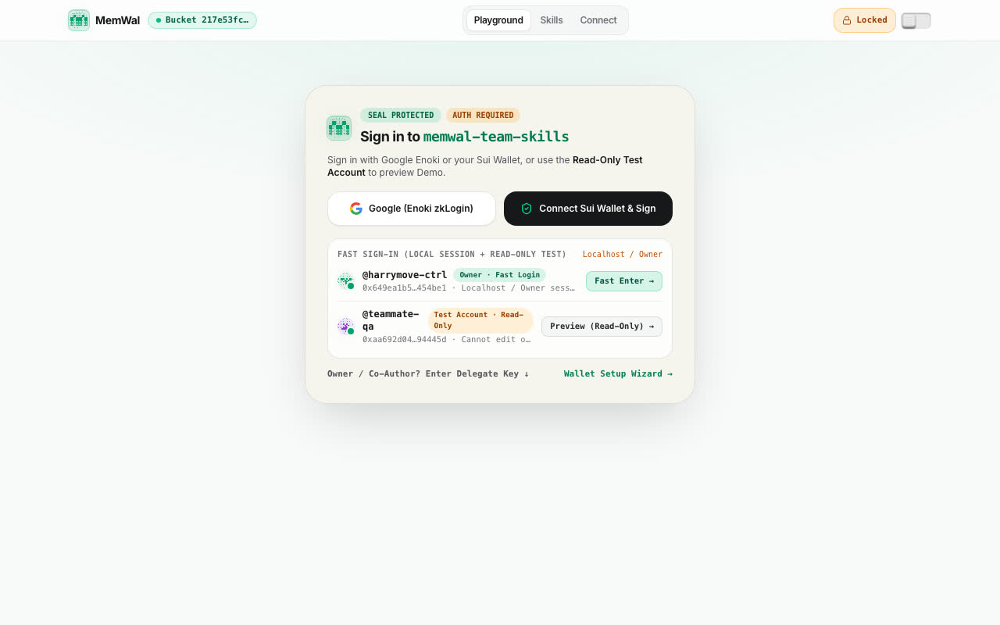<figcaption>Sign in leads with protocol words before saying what the product does.</figcaption></figure>
    <figure>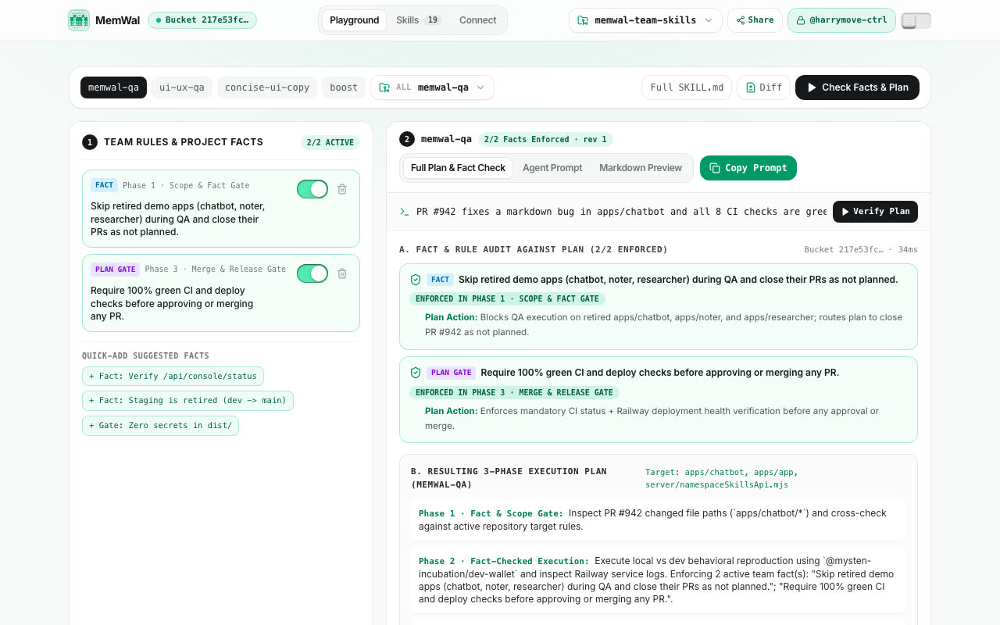<figcaption>The Playground has six competing actions and no clear first step.</figcaption></figure>
  </div>
  <div class="grid-2">
    <div class="panel"><h3>What goes wrong</h3><ol class="plain">
      <li>No story on arrival: a visitor is asked to authenticate before learning what it does.</li>
      <li>Hashes and revision ids lead the hierarchy instead of sitting in a proof drawer.</li>
      <li>Monospace and tracked capitals everywhere, so nothing stands out.</li>
      <li>Rules live on two screens under four different names.</li>
      <li>The value is invisible: no activity, no "your rule was used", no mainnet proof.</li>
      <li>Mobile scrolls sideways on three of four screens.</li>
    </ol></div>
    <div class="panel"><h3>What to keep</h3><ol class="plain">
      <li>The three column Skills skeleton: library, rules, document.</li>
      <li>A rule as one row with an author and an on/off switch.</li>
      <li>The Without versus With MemWal comparison, the best proof of value.</li>
      <li>The emerald accent on a warm neutral ground.</li>
      <li>Per agent setup on Connect, the step that drives activation.</li>
    </ol></div>
  </div>
</section>

<section id="directions">
  <span class="eyebrow">Concepts built with Stageshow</span>
  <h2>Three directions, one chosen</h2>
  <p class="sub">Same product, same data, three temperaments. On 3 Nov the owner chose <b>B, the dark command center</b>, for the whole product. A and C stay here for reference; C's before and after card lives on in B's Home.</p>
  <div class="tabs" role="tablist" aria-label="Design direction">
    <button role="tab" id="tab-b" aria-selected="true" aria-controls="dir-b" data-dir="b">B. Command center (chosen)</button>
    <button role="tab" id="tab-a" aria-selected="false" aria-controls="dir-a" data-dir="a">A. Calm workspace</button>
    <button role="tab" id="tab-c" aria-selected="false" aria-controls="dir-c" data-dir="c">C. Guided story</button>
  </div>
  <div class="direction" id="dir-a" role="tabpanel" aria-labelledby="tab-a" hidden>
    <figure>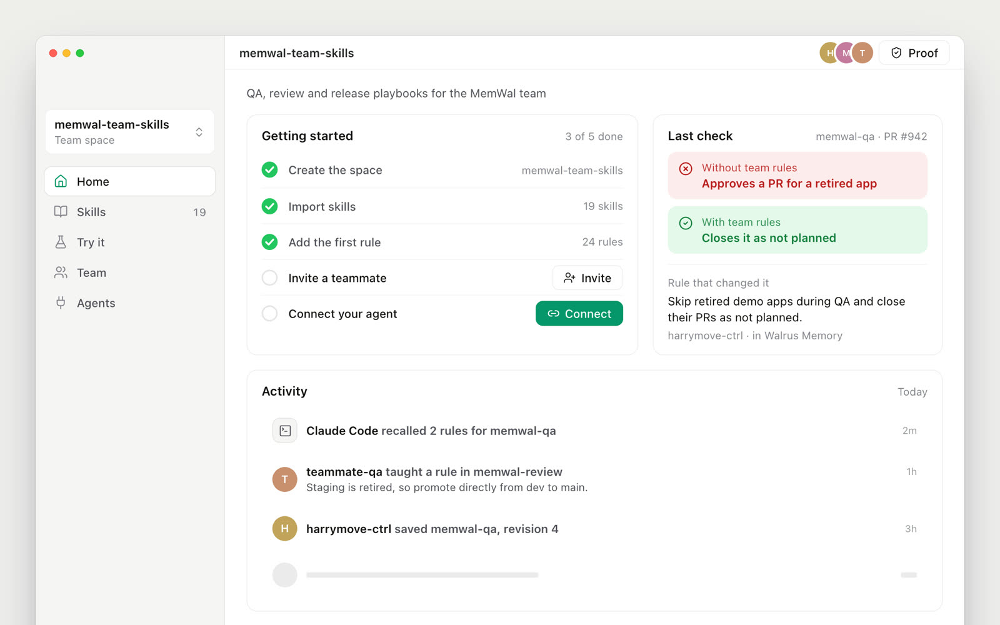<figcaption>Home: getting started, the last check, and what the team's agents did today.</figcaption></figure>
    <div class="notes"><span class="rec" style="background:var(--surface-2);color:var(--ink-2)">Not chosen</span><h3>A quiet tool you live in</h3><p class="sub">Warm white ground, gray hairlines, one emerald action per screen. Long SKILL.md documents stay comfortable to read. Risk: looks plain when Activity is empty, so the checklist fills Home until the space is activated.</p></div>
  </div>
  <div class="direction" id="dir-b" role="tabpanel" aria-labelledby="tab-b">
    <figure>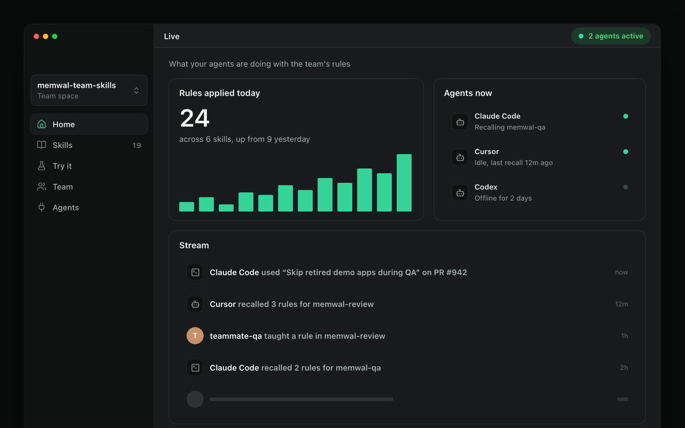<figcaption>Live: rules applied today, which agents are working, and a stream of uses.</figcaption></figure>
    <div class="notes"><span class="rec">Chosen 3 Nov</span><h3>An operations screen for agents</h3><p class="sub">Near black, surface steps, one lit color. Striking on a big screen and in the video. Its two risks are handled in the design system: SKILL.md reads on a raised, full contrast surface, and depth comes from surface steps instead of shadows.</p></div>
  </div>
  <div class="direction" id="dir-c" role="tabpanel" aria-labelledby="tab-c" hidden>
    <figure>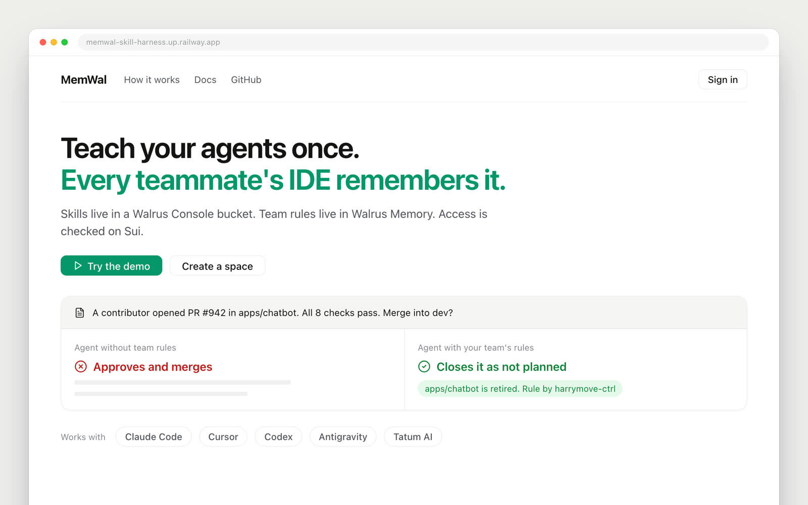<figcaption>Landing: the promise, Try the demo, and the decision a team rule changed.</figcaption></figure>
    <div class="notes"><span class="rec" style="background:var(--surface-2);color:var(--ink-2)">Kept as B's first run card</span><h3>A friendly product page</h3><p class="sub">The before and after card does the explaining. Judges reach a verdict in under 30 seconds without a wallet. Risk: feels like marketing for daily use, so it lives on the landing and the first run of Home.</p></div>
  </div>
</section>

<section id="screens">
  <span class="eyebrow">Direction B, every screen</span>
  <h2>Five places, one primary action each</h2>
  <p class="sub">Home, Skills, Try it, Team and Agents in a left sidebar (a bottom bar on mobile). Home has two states: the checklist until the space is activated, then the Live view. Proof moves into a drawer, so ids never lead the screen.</p>
  <div class="gallery">
    <figure>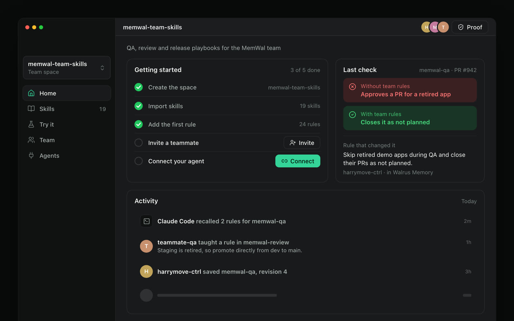<figcaption><b>Home, before activation.</b> The checklist drives setup; the last check shows the value.</figcaption></figure>
    <figure><figcaption><b>Home, after activation.</b> Live: rules applied today, agents now, every use of a rule.</figcaption></figure>
    <figure>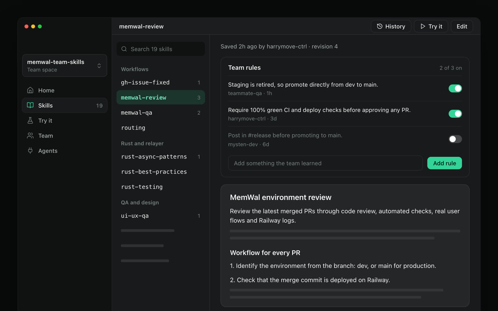<figcaption><b>Skills.</b> Team rules above the document; the document reads on a raised surface.</figcaption></figure>
    <figure>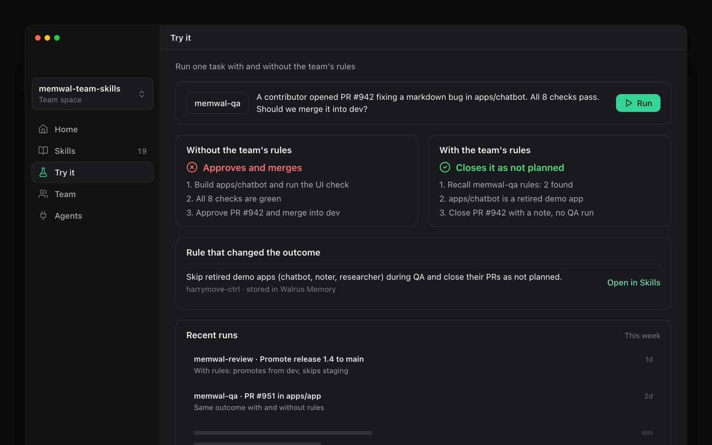<figcaption><b>Try it.</b> One task, two outcomes, and the rule that made the difference.</figcaption></figure>
    <figure>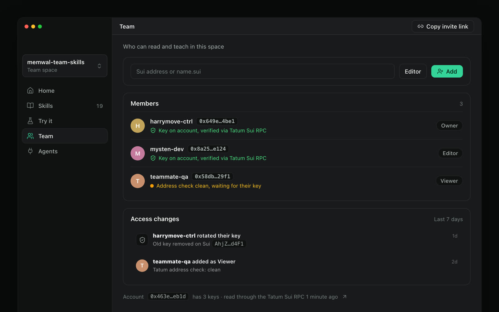<figcaption><b>Team.</b> Members verified on Sui through the Tatum Sui RPC, plus access changes.</figcaption></figure>
    <figure>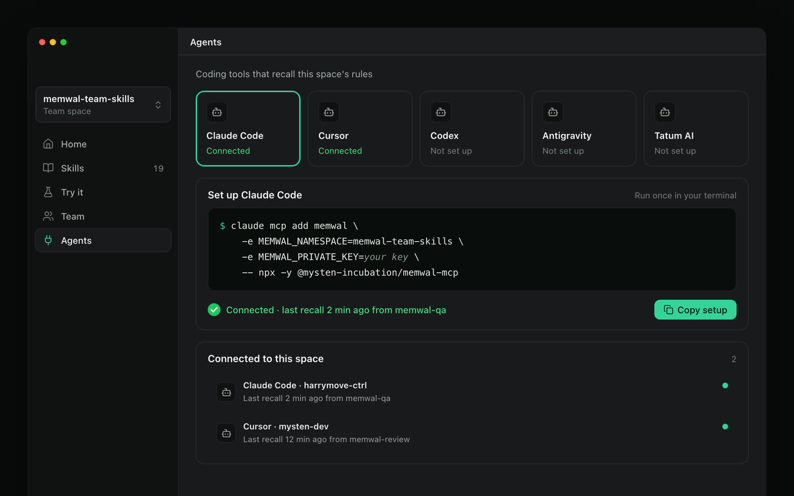<figcaption><b>Agents.</b> Pick a tool, copy one setup, watch it connect.</figcaption></figure>
    <figure>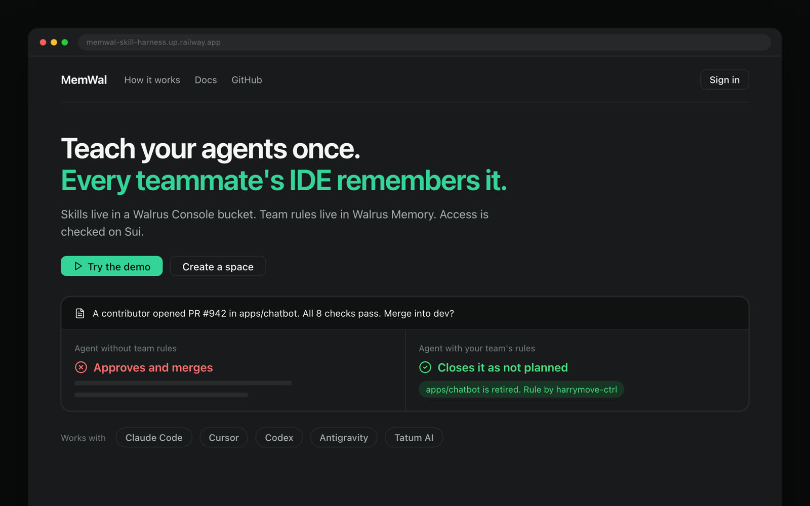<figcaption><b>Landing.</b> The promise, Try the demo, and the decision a team rule changed.</figcaption></figure>
  </div>
</section>

<section id="jobs">
  <span class="eyebrow">Everything a user can do</span>
  <h2>The job checklist</h2>
  <p class="sub">Every job, who does it, today's status, and its priority for the hackathon (P0 is needed for the demo on 10 Nov). Tick jobs as they ship; ticks are saved in this browser only.</p>
  <div class="filters">
    <input type="search" id="q" placeholder="Search jobs" aria-label="Search jobs">
    <select id="f-status" aria-label="Status"><option value="">Any status</option><option>Works</option><option>Built</option><option>Partial</option><option>Simulated</option><option>Missing</option></select>
    <select id="f-pri" aria-label="Priority"><option value="">Any priority</option><option>P0</option><option>P1</option><option>P2</option></select>
    <select id="f-role" aria-label="Role"><option value="">Any role</option><option>Visitor</option><option>Owner</option><option>Editor</option><option>Viewer</option><option>All</option></select>
  </div>
  <div class="summary" id="summary" aria-live="polite"></div>
  <div class="jobs" id="jobs"></div>
</section>

<section id="flows">
  <span class="eyebrow">Target behavior</span>
  <h2>The flows that matter</h2>
  <div class="grid-2">
    <div class="panel"><h3>Owner setup to first recall</h3><p class="sub">Activation is one teammate, one agent, one recall. Home's checklist mirrors these steps.</p>
<pre class="mermaid">flowchart TD
  S["Create space"] --> I["Import skills"]
  I --> R["Add the first rule"]
  R --> T["Invite a teammate"]
  T --> C["Connect an agent"]
  C --> W["Waiting for first recall"]
  W -->|"recall arrives"| D["Activated"]
  W -->|"2 minutes, nothing"| H["Troubleshoot"]
  H --> W</pre></div>
    <div class="panel"><h3>A rule's life</h3><p class="sub">Walrus Memory cannot delete, so every change is a new event and the newest wins.</p>
<pre class="mermaid">stateDiagram-v2
  [*] --> Active: Add
  Active --> Active: Edit
  Active --> Off: Turn off
  Off --> Active: Turn on
  Active --> Baked: Bake into SKILL.md
  Active --> Deleted: Delete
  Off --> Deleted: Delete</pre></div>
  </div>
  <div class="panel"><h3>Teach once, every agent follows</h3>
<pre class="mermaid">sequenceDiagram
  participant E as Editor
  participant App as Harness
  participant Mem as Walrus Memory
  participant A as Teammate's agent
  E->>App: Add rule to memwal-review
  App->>Mem: remember RULE event
  Mem-->>App: blob id
  A->>Mem: recall rules for memwal-review
  Mem-->>A: folded rules, newest wins
  A->>App: activity, recalled 2 rules
  App-->>E: Claude Code used your rule</pre></div>
</section>

<section id="plan">
  <span class="eyebrow">Judging: integration 30%, technical 30%, creativity 20%, presentation 20%</span>
  <h2>Seven days to submission</h2>
  <div class="table-wrap"><table>
    <thead><tr><th>Day</th><th>Date</th><th>Goal</th><th>Done when</th></tr></thead>
    <tbody>
      <tr><td class="num">1</td><td>Tue 3 Nov</td><td>Plan approved, direction chosen</td><td>Done: direction B</td></tr>
      <tr><td class="num">2</td><td>Wed 4 Nov</td><td>Git baseline, dark tokens, app shell, routes, vocabulary</td><td>Sidebar and mobile bar on dark, new labels, 0px overflow at 390px</td></tr>
      <tr><td class="num">3</td><td>Thu 5 Nov</td><td>Home (checklist and Live) and Skills</td><td>Checklist from real data, Live counts real recalls, rule switches stick</td></tr>
      <tr><td class="num">4</td><td>Fri 6 Nov</td><td>Team, Agents, Tatum Sui RPC</td><td>Members verified through Tatum, agent status from real recalls, no auto registration</td></tr>
      <tr><td class="num">5</td><td>Sat 7 Nov</td><td>Landing, demo space, Try it</td><td>A visitor reaches a verdict in 30 seconds without a wallet</td></tr>
      <tr><td class="num">6</td><td>Sun 8 Nov</td><td>Proof drawer, states, QA, blog post</td><td>Audit targets met on every screen, blog drafted</td></tr>
      <tr><td class="num">7</td><td>Mon 9 Nov</td><td>Video, public repo, submit</td><td>Video recorded from the dark UI, submitted a day early</td></tr>
    </tbody>
  </table></div>
  <div class="grid-2">
    <div class="panel"><h3>Submission gaps</h3><ol class="plain">
      <li><b>Tatum RPC is not used.</b> Only Tatum data APIs are called today. Read the account's delegate keys and transactions through the Tatum Sui RPC.</li>
      <li><b>No public repo.</b> The folder is not a git repository yet.</li>
      <li><b>No blog post.</b> It must cover how the project learned over time.</li>
    </ol></div>
    <div class="panel"><h3>Already met</h3><ol class="plain">
      <li>Walrus Memory writing to mainnet, with <b>67</b> memories in this account (the rule asks for 10).</li>
      <li>A working demo on Railway, with no secrets in the client since 2 Nov.</li>
      <li>SKILL.md files in a Walrus Console bucket through the Console MCP.</li>
    </ol></div>
  </div>
</section>

<section id="build">
  <span class="eyebrow">Engineering, days 2 to 7</span>
  <h2>Build plan</h2>
  <p class="sub">Antigravity owns <span class="mono">src/App.tsx</span>. Claude builds the shell and every place as new components driven by props; Antigravity mounts them and passes the data. Every step ends with the UI audit and the secret scan.</p>
  <div class="table-wrap"><table>
    <thead><tr><th>Step</th><th>Day</th><th>Work</th><th>Done when</th></tr></thead>
    <tbody>
      <tr><td class="num">0</td><td>Wed 4</td><td>Git baseline and file ownership</td><td>One commit by harrymove-ctrl; agents agree who edits which file</td></tr>
      <tr><td class="num">1</td><td>Wed 4</td><td>Dark tokens as the default</td><td>Dark by default, light still one toggle away</td></tr>
      <tr><td class="num">2</td><td>Wed 4</td><td>App shell: sidebar, mobile bar, title bar</td><td>Five places, 0px overflow at 390px</td></tr>
      <tr><td class="num">3</td><td>Wed 4</td><td>Routes with aliases</td><td>/home, /skills, /try, /team, /agents; old paths redirect</td></tr>
      <tr><td class="num">4</td><td>Wed 4</td><td>Vocabulary pass</td><td>No "Bucket", "Fact", "Plan gate" or "Bake" in primary copy</td></tr>
      <tr><td class="num">5</td><td>Thu 5</td><td>Home before activation</td><td>Checklist ticks from real data</td></tr>
      <tr><td class="num">6</td><td>Thu 5</td><td>Live view</td><td>Counts today's real recall events</td></tr>
      <tr><td class="num">7</td><td>Thu 5</td><td>Skills and persisted rules</td><td>Rule switches survive reload; document on the raised surface</td></tr>
      <tr><td class="num">8</td><td>Fri 6</td><td>Team with the Tatum Sui RPC</td><td>Keys read through Tatum; address check before Add</td></tr>
      <tr><td class="num">9</td><td>Fri 6</td><td>Agents with live status</td><td>Status from each agent's last recall</td></tr>
      <tr><td class="num">10</td><td>Sat 7</td><td>Landing, demo space, Try it</td><td>Verdict in 30 seconds without a wallet</td></tr>
      <tr><td class="num">11</td><td>Sun 8</td><td>Proof drawer and screen states</td><td>Every state reachable with <span class="mono">?state=</span></td></tr>
      <tr><td class="num">12</td><td>Sun 8</td><td>QA pass</td><td>All audit targets met on desktop and mobile</td></tr>
    </tbody>
  </table></div>
  <div class="grid-2">
    <div class="panel"><h3>Settle before step 8</h3><ol class="plain">
      <li><b>Tatum's Sui protocol.</b> Sui's JSON-RPC was switched off in 2026; confirm Tatum's Sui gateway serves gRPC or GraphQL before building member verification on it.</li>
      <li><b>Recall logging.</b> Live and agent status need one activity event per recall; confirm each agent's setup writes it.</li>
    </ol></div>
    <div class="panel"><h3>Step 0, in a normal terminal</h3>
<div class="table-wrap" style="border:0"><pre style="margin:0;padding:12px 14px;font-family:var(--mono);font-size:13px;line-height:1.6;white-space:pre;background:var(--surface-2);border-radius:10px;overflow-x:auto">cd /Volumes/Dev/memwal-skill-harness
~/.agents/skills/github-identity-guard/scripts/enforce-github-identity.sh
git init -b main
git add -A
git commit -m "Baseline before the dark command center shell"</pre></div></div>
  </div>
</section>

<section id="decide">
  <span class="eyebrow">Your call</span>
  <h2>What is decided, and what is left</h2>
  <ol class="plain decisions">
    <li>Direction: decided on 3 Nov, <b>B. Command center</b>.</li>
    <li>Confirm the five places: Home, Skills, Try it, Team, Agents.</li>
    <li>Owner of <span class="mono">src/App.tsx</span>: decided on 3 Nov, <b>Antigravity</b>. Claude builds new files that Antigravity wires in, following <span class="mono">docs/ux/handoff-antigravity.md</span>.</li>
    <li>Run Step 0 and confirm the public repo name for the submission.</li>
  </ol>
  <p class="sub">The full plan lives in the repo under <span class="mono">docs/ux/</span>: the audit, users and jobs, flows, screens, design system, the hackathon plan and the build plan.</p>
</section>

<footer>Concept stills are faux UI built with the Stageshow kit; they show layout, hierarchy and words, not final pixels.</footer>
</main>

<script>
const JOBS = [{"id": "A1", "area": "First visit and sign in", "job": "See what the product does and why it matters, before signing in", "role": "Visitor", "status": "Missing", "pri": "P0"}, {"id": "A2", "area": "First visit and sign in", "job": "Watch or step through a 30 second before and after example", "role": "Visitor", "status": "Partial (the comparison exists after sign in)", "pri": "P0"}, {"id": "A3", "area": "First visit and sign in", "job": "Explore a demo space read only, without a wallet", "role": "Visitor", "status": "Partial (\"Preview (read only)\" exists, buried in a card)", "pri": "P0"}, {"id": "A4", "area": "First visit and sign in", "job": "Sign in with Google", "role": "Owner, Editor", "status": "Simulated (the dev server mints its own signed token)", "pri": "P1"}, {"id": "A5", "area": "First visit and sign in", "job": "Sign in with a Sui wallet", "role": "Owner, Editor", "status": "Built", "pri": "P0"}, {"id": "A6", "area": "First visit and sign in", "job": "Use an existing delegate key (advanced)", "role": "Owner, Editor", "status": "Built", "pri": "P1"}, {"id": "A7", "area": "First visit and sign in", "job": "See who I am signed in as, and sign out", "role": "All signed in", "status": "Works", "pri": "P0"}, {"id": "B1", "area": "Space", "job": "See the space at a glance: skills, rules, members, connected agents, last change", "role": "All", "status": "Missing", "pri": "P0"}, {"id": "B2", "area": "Space", "job": "Follow a getting started checklist until the first agent recall", "role": "Owner", "status": "Missing", "pri": "P0"}, {"id": "B3", "area": "Space", "job": "Create a new space from a template (QA, Review, Release, Frontend)", "role": "Owner", "status": "Partial (onboarding block, local only)", "pri": "P1"}, {"id": "B4", "area": "Space", "job": "Switch between spaces", "role": "All", "status": "Works", "pri": "P0"}, {"id": "B5", "area": "Space", "job": "Open the proof drawer: Console bucket, Walrus blobs, Sui objects, mainnet memory count", "role": "All", "status": "Partial (a hash chip in the header)", "pri": "P0"}, {"id": "B6", "area": "Space", "job": "Rename or archive a space", "role": "Owner", "status": "Missing", "pri": "P2"}, {"id": "C1", "area": "Skills", "job": "Browse, search and filter skills by category", "role": "All", "status": "Works", "pri": "P0"}, {"id": "C2", "area": "Skills", "job": "Read a skill with its active rules shown on top", "role": "All", "status": "Works", "pri": "P0"}, {"id": "C3", "area": "Skills", "job": "Edit a SKILL.md with a live preview and save it as a new revision in the Console bucket", "role": "Owner, Editor", "status": "Built (Console gateway)", "pri": "P0"}, {"id": "C4", "area": "Skills", "job": "See the revision history of a skill, who saved each one, and a diff", "role": "All", "status": "Partial (revision number and a Diff button)", "pri": "P1"}, {"id": "C5", "area": "Skills", "job": "Get a clear conflict message when someone saved first, and merge", "role": "Owner, Editor", "status": "Built (API returns a conflict)", "pri": "P1"}, {"id": "C6", "area": "Skills", "job": "Create a skill from a template", "role": "Owner, Editor", "status": "Partial", "pri": "P1"}, {"id": "C7", "area": "Skills", "job": "Import SKILL.md files or a folder by drag and drop", "role": "Owner, Editor", "status": "Missing", "pri": "P1"}, {"id": "C8", "area": "Skills", "job": "Delete a skill", "role": "Owner", "status": "Built (API only)", "pri": "P2"}, {"id": "C9", "area": "Skills", "job": "Copy or download a skill, compiled with its active rules", "role": "All", "status": "Works", "pri": "P0"}, {"id": "C10", "area": "Skills", "job": "See which agents used this skill recently", "role": "All", "status": "Missing", "pri": "P1"}, {"id": "C11", "area": "Skills", "job": "Keep personal skills out of the team library", "role": "Owner", "status": "Missing", "pri": "P1"}, {"id": "D1", "area": "Rules", "job": "Add a rule to a skill in one line", "role": "Owner, Editor", "status": "Works", "pri": "P0"}, {"id": "D2", "area": "Rules", "job": "Edit a rule; the newer revision replaces the old one everywhere", "role": "Owner, Editor", "status": "Built (event log)", "pri": "P0"}, {"id": "D3", "area": "Rules", "job": "Turn a rule off or on, and have that stick after reload and for every agent", "role": "Owner, Editor", "status": "Built (event log); UI persistence needs a check", "pri": "P0"}, {"id": "D4", "area": "Rules", "job": "Delete a rule so it never comes back", "role": "Owner, Editor", "status": "Built (event log)", "pri": "P0"}, {"id": "D5", "area": "Rules", "job": "See who wrote a rule, when, and its proof on Walrus", "role": "All", "status": "Partial", "pri": "P0"}, {"id": "D6", "area": "Rules", "job": "Move a rule into the SKILL.md text for good (\"Bake\")", "role": "Owner, Editor", "status": "Built", "pri": "P1"}, {"id": "D7", "area": "Rules", "job": "Review rules an agent proposed before they go live", "role": "Owner", "status": "Missing", "pri": "P2"}, {"id": "E1", "area": "Try it", "job": "Pick a skill and a task, then run it with and without the space's rules", "role": "All", "status": "Works (preset scenario)", "pri": "P0"}, {"id": "E2", "area": "Try it", "job": "See which rules changed the outcome, with the verdict for each side", "role": "All", "status": "Works", "pri": "P0"}, {"id": "E3", "area": "Try it", "job": "Write my own task instead of the preset", "role": "All", "status": "Partial (\"Custom\" tab)", "pri": "P1"}, {"id": "E4", "area": "Try it", "job": "Copy the exact prompt an agent would receive", "role": "All", "status": "Works", "pri": "P1"}, {"id": "F1", "area": "Team", "job": "Invite a teammate with a link", "role": "Owner", "status": "Works", "pri": "P0"}, {"id": "F2", "area": "Team", "job": "Add a teammate by Sui address or SuiNS name, with a role", "role": "Owner", "status": "Works", "pri": "P0"}, {"id": "F3", "area": "Team", "job": "Change a member's role, or remove them", "role": "Owner", "status": "Partial (remove only)", "pri": "P1"}, {"id": "F4", "area": "Team", "job": "See each member verified on Sui: their delegate key is on the account, read through the Tatum Sui RPC", "role": "All", "status": "Missing", "pri": "P0"}, {"id": "F5", "area": "Team", "job": "See a risk check on an address before adding it (Tatum address security)", "role": "Owner", "status": "Built (server proxy)", "pri": "P0"}, {"id": "F6", "area": "Team", "job": "Stop anyone from joining a space just by asking (no auto registration)", "role": "Owner", "status": "Simulated (the server adds any address)", "pri": "P0"}, {"id": "G1", "area": "Connect agents", "job": "Pick my coding agent and copy a one line setup", "role": "All signed in", "status": "Works", "pri": "P0"}, {"id": "G2", "area": "Connect agents", "job": "See that my agent is connected: last recall and from which skill", "role": "All signed in", "status": "Missing", "pri": "P0"}, {"id": "G3", "area": "Connect agents", "job": "See every agent connected to the space and when each was last seen", "role": "Owner", "status": "Missing", "pri": "P1"}, {"id": "G4", "area": "Connect agents", "job": "Disconnect an agent or revoke its key", "role": "Owner", "status": "Missing", "pri": "P2"}, {"id": "H1", "area": "Activity and proof", "job": "Read a feed of what changed: rules taught, skills edited, members added, agents recalling", "role": "All", "status": "Built (a panel exists, not in the main navigation)", "pri": "P0"}, {"id": "H2", "area": "Activity and proof", "job": "Filter the feed by member, agent or skill", "role": "All", "status": "Missing", "pri": "P1"}, {"id": "H3", "area": "Activity and proof", "job": "Open any item's proof: Walrus blob, Console file, Sui transaction", "role": "All", "status": "Partial", "pri": "P0"}, {"id": "H4", "area": "Activity and proof", "job": "See the mainnet memory count for the space (the hackathon asks for at least 10)", "role": "All", "status": "Partial (a count in the status API)", "pri": "P0"}, {"id": "I1", "area": "Settings", "job": "Switch light and dark theme", "role": "All", "status": "Works", "pri": "P1"}, {"id": "I2", "area": "Settings", "job": "See which network the space runs on (mainnet or dev)", "role": "All", "status": "Partial", "pri": "P1"}, {"id": "I3", "area": "Settings", "job": "Manage keys: see which delegate keys exist and revoke one", "role": "Owner", "status": "Missing (done by script today)", "pri": "P2"}];
const KEY = "memwal-ux-plan-done-v1";
let done = {};
try { done = JSON.parse(localStorage.getItem(KEY) || "{}"); } catch (e) { done = {}; }
const $ = (s) => document.querySelector(s);
const baseStatus = (s) => s.split(" (")[0].split(";")[0].trim();
function roleMatch(job, role) {
  if (!role) return true;
  if (role === "All") return /All/.test(job.role);
  return job.role.includes(role) || /^All/.test(job.role);
}
function render() {
  const q = $("#q").value.trim().toLowerCase();
  const fs = $("#f-status").value, fp = $("#f-pri").value, fr = $("#f-role").value;
  const list = JOBS.filter((j) =>
    (!q || (j.job + " " + j.area + " " + j.id).toLowerCase().includes(q)) &&
    (!fs || baseStatus(j.status) === fs) && (!fp || j.pri === fp) && roleMatch(j, fr));
  const counts = {};
  list.forEach((j) => { const s = baseStatus(j.status); counts[s] = (counts[s] || 0) + 1; });
  const shipped = list.filter((j) => done[j.id]).length;
  $("#summary").innerHTML = ["Works", "Built", "Partial", "Simulated", "Missing"].filter((s) => counts[s])
    .map((s) => `<span class="stat s-${s}">${counts[s]} ${s.toLowerCase()}</span>`).join("") +
    `<span class="stat" style="background:var(--surface-2);color:var(--ink-2)">${shipped} of ${list.length} ticked</span>`;
  const box = $("#jobs");
  box.textContent = "";
  if (!list.length) { box.innerHTML = '<div class="empty">No jobs match these filters.</div>'; return; }
  let area = "";
  for (const j of list) {
    if (j.area !== area) { area = j.area; const h = document.createElement("div"); h.className = "area-h"; h.textContent = j.id[0] + ". " + area; box.appendChild(h); }
    const row = document.createElement("label");
    row.className = "job" + (done[j.id] ? " done" : "");
    const s = baseStatus(j.status);
    row.innerHTML = `<input type="checkbox" id="job-${j.id}" ${done[j.id] ? "checked" : ""}>
      <span><span class="t"></span><div class="m"></div></span>
      <span class="tags"><span class="pri ${j.pri}">${j.pri}</span><span class="stat s-${s}"></span></span>`;
    row.querySelector(".t").textContent = j.job;
    row.querySelector(".m").textContent = j.id + " · " + j.role + (j.status !== s ? " · " + j.status.slice(s.length).replace(/^\s*[(;]\s*|\)$/g, "") : "");
    row.querySelector(".stat").textContent = s;
    row.querySelector("input").addEventListener("change", (e) => {
      done[j.id] = e.target.checked;
      try { localStorage.setItem(KEY, JSON.stringify(done)); } catch (err) {}
      render();
    });
    box.appendChild(row);
  }
}
["#q", "#f-status", "#f-pri", "#f-role"].forEach((s) => $(s).addEventListener("input", render));
render();

document.querySelectorAll('.tabs button').forEach((b) => b.addEventListener("click", () => {
  document.querySelectorAll('.tabs button').forEach((x) => x.setAttribute("aria-selected", String(x === b)));
  ["a", "b", "c"].forEach((d) => { $("#dir-" + d).hidden = d !== b.dataset.dir; });
}));
</script>
